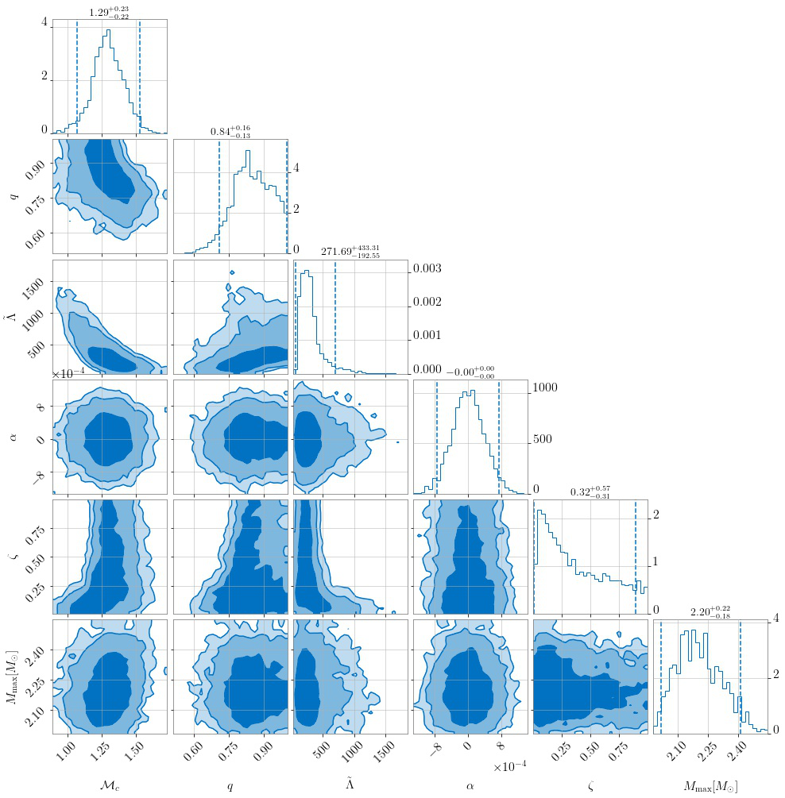

Connecting Electromagnetic signals to Binary Source Properties#
In NMMA, it is possible to use the results from GW inferences together with kilonova inferences or joint KN+GRB afterglow inferences to get estimates on the binary properties. A binary system can be a binary neutron star (BNS) merger or a neutron-star-black-hole (NSBH) merger. We can connect observed electromagnetic signals to potential source properties via phenomenological relations, i.e., via fits based on numerical-relativity relations, see (Pang et al. 2022) and Refs. therein for further details.
For estimating the source properties, the following input files are required:
EMsamples- is the posterior sample file from a previous Bayesian inference (e.g. Kilonova+GRB inference) on electromagnetic (EM) signals,EMprior- is the prior file that was used for the EM inferenceEOS- number of equation of state files which will be used in the resamplingEOSpath- path to the folder of all EOS filesGWsamples- some fiducial randomly generated posterior samples for masses, chirp mass, mass ratio, luminosity distance, and EOS samples,GWprior- a prior file for gravitational wave sources
The prior file from the EM inference needs to be supplemented by two additional parameters \(\alpha\) and \(\zeta\) that are used in the numerical fit expressions that link the disk, wind and total ejecta masses:
alpha = Gaussian(mu=0., sigma=4e-4, name='alpha',latex_label='$\\alpha$')
zeta = Uniform(minimum=0., maximum=1.0, name='ratio_zeta',latex_label='$\\zeta$')
Estimating BNS properties
Here, we take the observed gamma-ray burst GRB211211A as an example and assume that associated electromagnetic signals
originated from a BNS merger. For this signal, a joint inference (kilonova + GRB) can be carried out and will provide you with the required EMsamples.
For the GWsamples input file, we need to generate some fiducial dummy GW samples. A script for the generation can be found here.
The GW sample generation is based on the EOS set 15nsat_cse_uniform_R14 which can be found on Zenodo.
The EMprior file is the same as used for the KN+GRB inference (see priors) and the GWprior file should be adjusted to the GWsamples.
Finally, we can use this command:
gwem-resampling --outdir outdir --GWsamples example_files/tools/gwem_resampling/GWsamples.dat --GWprior priors/GWBNS.prior --EMsamples example_files/tools/gwem_resampling/GRB211211A_posterior_samples.dat --EOSpath 15nsat_cse_uniform_R14/macro/ --Neos 5000 --EMprior priors/Bu2019lm_TrPi2018GRB211211A.prior --nlive 1024
The result will be a posterior file containing information on:
the chirp mass \(\mathcal{M}_c\),
mass ratio \(q\),
Tidal deformability \(\tilde{\Lambda}\),
dynamical ejecta mass error \(α\),
dynamical ejecta mass fraction \(ζ\), and
equation of state EOS
A corner plot is shown below:

Estimating NSBH properties
In order to estimate the properties of a NSBH system, you need to adjust the GWsamples and GWprior file accordingly and run the resampling
with the argument withNSBH (otherwise, you will run for a BNS system).
gwem-resampling --outdir outdir --GWsamples example_files/tools/gwem_resampling/GWsamples_NSBH.dat --GWprior priors/GWNSBH.prior --withNSBH --EMsamples example_files/tools/gwem_resampling/GRB211211A_NSBH_posterior_samples.dat --EOSpath 15nsat_cse_uniform_R14/macro/ --Neos 5000 --EMprior priors/Bu2019nsbh_TrPi2018_GRB211211A.prior --nlive 1024